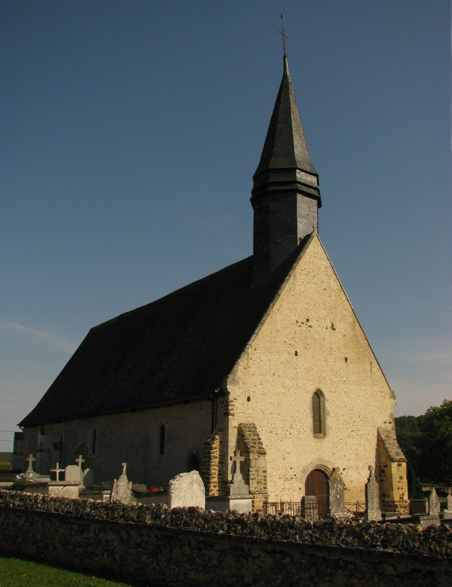

Bienvenue à Acon
Un village de la vallée de l'Avre, entre Normandie et Perche.
Ici, on connaît ses voisins, on entend l'Avre couler et on prend le temps. Ce site rassemble, au même endroit, tout ce qui fait la vie d'Acon et de ses trois hameaux — Les Brûlés, Le Mesnil et Le Rousset : son histoire, ses démarches du quotidien et les bonnes adresses. Que vous habitiez le village depuis toujours ou que vous veniez d'y poser vos valises, vous êtes chez vous.

Par où commencer
Découvrir Acon
La vallée de l'Avre, les trois hameaux, l'église Saint-Denis et un patrimoine mégalithique rare.
→
MémoireHistoire & Archives
Des dolmens du Néolithique à aujourd'hui : la longue histoire du village, et où retrouver ses archives.
→
Au quotidienInfos pratiques
Mairie, démarches, écoles, déchets, eau et énergie, emploi : l'essentiel réuni et à jour.
→
Économie localeAnnuaire
Commerces, artisans, producteurs et services d'Acon. Faites vivre — et connaître — l'activité du village.
→
En bref
Un village du sud de l'Eure
Acon veille sur la vallée de l'Avre, au sud du département de l'Eure, tout près de l'Eure-et-Loir (28) et aux portes du Perche. La commune réunit 478 Aconnais et Aconnaises, répartis entre le bourg et les hameaux des Brûlés, du Mesnil et du Rousset. Elle fait partie du canton de Verneuil d'Avre et d'Iton et de la communauté d'agglomération Évreux Portes de Normandie. Son maire est Christophe Blin.
Ce site est écrit bénévolement par une habitante. Il ne remplace pas la mairie : il donne simplement, avec le cœur, de quoi mieux connaître Acon et se faciliter la vie de tous les jours.
Rester en lien
La vie du village
Pour ne rien manquer des nouvelles, des travaux et des rendez-vous de la commune :
- Page Facebook « Commune d'Acon » — photos et actualités partagées par les habitants : facebook.com/acon27570
- PanneauPocket — les alertes et informations de la mairie sur votre téléphone : appli PanneauPocket · Acon
Une info à corriger, une photo ancienne à partager, une bonne adresse à ajouter ? Ce site grandit avec vous. Écrivez-moi